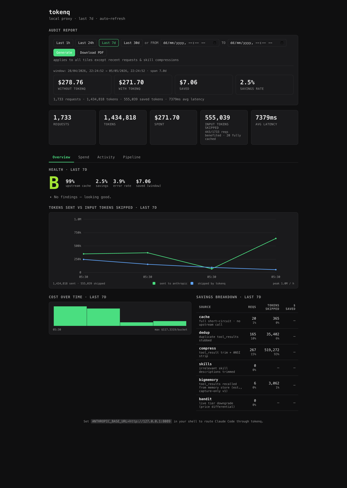
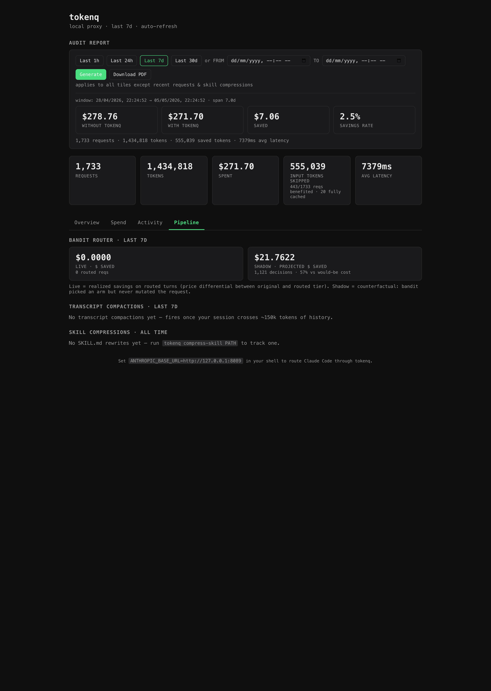
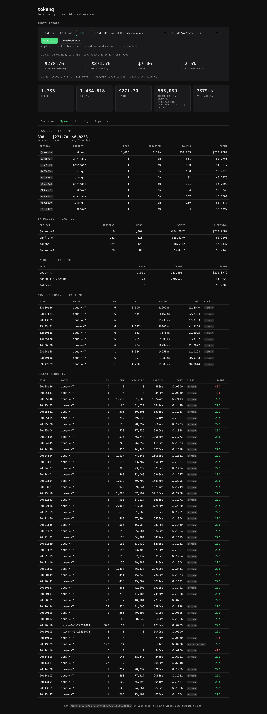
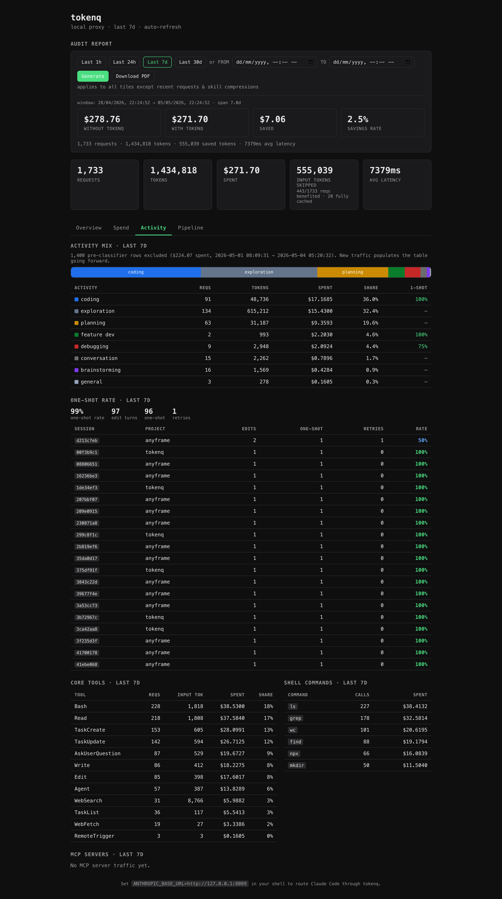

Current vs enterprise architecture
tokenq runs as a local proxy on the developer's machine. The default deployment talks directly to Anthropic; the enterprise deployment adds a single hop to a corporate LLM gateway. Same code, one env var difference.
📐 Current — direct to Anthropic (consumer / individual)
Single zone on the laptop, one external API. Solid line = HTTPS over public internet.
🏢 Proposed enterprise — additional hop to LLM gateway
Three zones now: laptop → corporate VPC → public cloud. Solid orange line crosses the WAN; the gateway terminates the SSO token and re-issues calls to one of multiple LLM providers using corporate keys.
📐 Current — direct to Anthropic (consumer / individual)
Today's default. The user sets ANTHROPIC_BASE_URL=http://127.0.0.1:8089, restarts Claude Code, and that's it.
tokenq intercepts every /v1/messages call, runs the 8-strategy pipeline, and forwards the result directly to
api.anthropic.com using the user's personal API key.
- Reads
ANTHROPIC_BASE_URLenv var - Sends
POST /v1/messageswith personal Anthropic API key inx-api-keyheader
- Intercept
/v1/messages→ run 8-strategy pipeline (bandit, compactor, cache, dedup, compress, skills, output, bigmemory) - Persist every request to
~/.tokenq/tokenq.db(SQLite) - Serve dashboard at
:8090(read-only view of the same DB) - API key is passed through unchanged — tokenq never reads or stores it
- Authenticates via the user's personal API key
- Bills the user's personal account directly
Configuration (today's default)
🏢 Proposed enterprise — additional hop to LLM gateway
Enterprises typically don't want raw Anthropic API keys distributed to laptops. They route all LLM traffic through a corporate gateway that handles SSO authentication, audit logging, DLP, rate limiting, and multi-vendor routing (Anthropic / Azure OpenAI / AWS Bedrock). The gateway holds the real provider keys.
Good news: the only required change is one env var — TOKENQ_UPSTREAM already exists
(config.py:4). Point it at the gateway and tokenq forwards there instead of Anthropic. The 8-strategy
pipeline still runs locally — compression, caching, and bandit decisions all happen before traffic leaves the laptop.
- Reads
ANTHROPIC_BASE_URLenv var (same as before) - Auth header now carries an SSO/OIDC token, not an Anthropic API key
- Intercept
/v1/messages→ run 8-strategy pipeline (unchanged) - Persist to per-user
~/.tokenq/tokenq.db(private telemetry stays local) - Dashboard at
:8090(per-developer cost visibility) - Forward to corporate gateway instead of Anthropic (single env var)
- Optionally inject
X-Tenant-Id,X-User-Email,X-Projectheaders from local config - Optionally present a corporate mTLS client cert
- SSO/OIDC token validation (Okta, Azure AD, etc.)
- Per-team rate limits + quota enforcement
- DLP / PII scrubbing on the request body
- Append audit log entry → SIEM (Splunk, Datadog)
- Model whitelist enforcement (e.g. block deprecated model IDs)
- Multi-vendor routing: Anthropic / Azure OpenAI / Bedrock
- Aggregate billing reporting per-team
- Holds the real provider API keys — never on laptops
- Authenticated by the gateway's service account key
- Billed to the corporate Anthropic account
Configuration (enterprise)
What stays vs what's added
🔵 unchanged from current
- All 8 pipeline strategies run identically
- Local SQLite at
~/.tokenq/tokenq.db - Per-developer dashboard on
:8090 - Cache hits never leave the laptop
- Compression happens before egress (less WAN, less gateway load)
- Zero changes to client integration code
🟢 new in enterprise mode
TOKENQ_UPSTREAMpoints at gateway URL- Header injection from local config (
TOKENQ_FORWARD_HEADERS) - Optional mTLS client cert (
TOKENQ_MTLS_CERT) - Auth header carries SSO token, not Anthropic key
- Optional telemetry sink for centralized cost dashboards
- (Gateway side: SSO, audit, DLP, multi-vendor routing)
🎯 Migration path
tokenq install + ANTHROPIC_BASE_URL). Validate that the dashboard surfaces actual savings on their workload. No gateway needed yet.TOKENQ_UPSTREAM for pilot team (week 4).🔐 Security and compliance posture
| concern | current | enterprise |
|---|---|---|
| API key distribution | ⚠ each laptop holds a personal key | ✓ keys live on the gateway only; laptops use SSO tokens |
| Audit / SIEM | — local SQLite only | ✓ gateway logs every call to SIEM |
| PII / DLP | — not enforced | ✓ scanned at the gateway before egress |
| Multi-vendor (Azure / Bedrock) | — Anthropic only | ✓ gateway can swap providers per request |
| Per-developer telemetry | ✓ rich dashboard on laptop | ✓ same, plus optional central rollup |
| Pipeline savings (8 strategies) | ✓ runs locally | ✓ runs locally — savings happen before WAN egress |
| Cache hit latency | ✓ ~2ms (laptop) | ✓ ~2ms (laptop) — never reaches gateway |
📊 dashboard tour
Reading the dashboard
Every number on the tokenq dashboard maps directly to a strategy. Hover the numbered badges (①②③…) to see the formula and which strategy contributes. The mockup below mirrors the actual UI pixel-for-pixel.
📷 Real screenshots — last 7 days on this machine
These are real captures of http://127.0.0.1:8090 with the Last 7d preset selected.
Pulled from the live SQLite DB at ~/.tokenq/tokenq.db — 1,733 requests, $271.70 spent, $7.06 saved, 99% upstream cache hit rate.
📊 Overview tab — the at-a-glance view
The first thing you see. Top: audit-report tiles with the $278.76 → $271.70 = $7.06 savings comparison. Middle: 5 KPI cards. Below: Health grade B (99% cache · 2.5% savings · 3.9% errors · $7.06 saved). Charts show tokens-sent vs skipped (peak 1.0M/h) and cost-over-time. Savings breakdown lists every stage.

🚇 Pipeline tab — bandit + compaction + skill compressions
The strategy-by-strategy panel. Two cards for the bandit: Live shows realized savings ($0 — we're in shadow mode), Shadow shows the counterfactual: $21.76 over 1,121 decisions, 57% of would-be cost saved. Below: transcript compactions (none — sessions stayed under the 150k threshold) and skill compressions (none yet).

TOKENQ_BANDIT_MODE=live, that $21.76 becomes realized: 57% of bandit-eligible cost would be cut.
Top recommended arms across 7 buckets: Haiku 391 · Opus 386 · Sonnet 344.
💰 Spend tab — sessions, projects, models, top spenders
Where the money went. Per-session and per-project breakdowns at the top, then by-model: claude-opus-4-7 = 1,551 reqs / $270.38 (98% of spend), haiku = 173 reqs / $1.32. The "most expensive" table at the bottom flags individual requests — useful for spotting outliers.

🎯 Activity tab — what kind of work, and one-shot rate
Activity mix stack chart classifies every request by type (coding 36.8%, exploration 32.4%, planning 19.6%, …). One-shot rate measures whether Edit-bearing turns succeeded on the first try: 97 one-shot vs 1 retry across 96 sessions = 99% one-shot rate — extremely high. Below: core tools (Bash, Read, TaskCreate dominate), shell commands (ls, grep, sc), and MCP servers.

🎓 Annotated mockup — formula behind every number
Same dashboard, simplified into an interactive walkthrough. Hover the numbered badges (①②③…) on the cards below to see the SQL formula and which strategy contributes.
Top KPI bar — bottom-line comparison
The first thing you see when you open http://127.0.0.1:8765. Five cards summarize the entire window.
dashboard/app.py:_collect_reportestimated_cost_usd)
cached_locally = 1.
Health grade — at-a-glance health check
An A–F grade computed from three components. The override on the savings line is important — high upstream cache hit rate means there's nothing left to cut.
Savings breakdown — which strategy contributes how much
The clearest single view in the dashboard: tokens saved per stage, share of total. Click each row to jump to that strategy.
| source | tokens saved | requests | share % | strategy |
|---|---|---|---|---|
| cache | 2,418,073 | 312 | 42.1% | → ExactMatchCache |
| compaction | 1,892,140 | 8 (rollovers) | 32.9% | → TranscriptCompactor |
| compress | 812,402 | 1,104 | 14.2% | → ToolOutputCompressor |
| dedup | 389,118 | 421 | 6.8% | → ToolResultDedup |
| skills | 230,892 | 1,712 | 4.0% | → SkillLoader |
compaction_events, but its saved_per_turn applies on every cache-hit turn that
follows. So 8 rollovers in 24h might be powering thousands of subsequent turn savings.
Bandit router panel — live + shadow
Two cards side-by-side: realized savings (live mode) and counterfactual savings (shadow mode). Surfaced separately so users don't conflate "would have saved" with "actually saved."
TOKENQ_BANDIT_MODE=liveCompaction panel — three numbers tell the whole story
COUNT(*) from compaction_events
SUM(dropped_tokens)
SUM(saved_per_turn)
Time-series charts — tokens & cost over time
strategy 1 of 8
Bandit Router
How tokenq quietly tries cheaper Claude models for you — without ever risking quality. Click and play with each animation below.
🎰 The casino analogy
Think of three slot machines. Each one charges a different amount per pull, and each one pays out at a different rate. The bandit's job: figure out which to play, without spending too much on the bad ones.
🎯 Thompson sampling — picking with appropriate confidence
Instead of always picking the model with the highest average success, Thompson sampling rolls a random number from each model's belief curve. Models we've barely tested have wide curves (so they sometimes get picked anyway — we need to learn about them). Models we've tested a lot have narrow, confident curves.
🎚️ The three modes — safety dials
The bandit doesn't just route blindly. It has three gears, with shadow as the default safe mode.
off
No-op. The bandit does nothing.
shadow DEFAULT
Picks a recommendation but never changes the request. Just logs what it would have done. Zero risk.
live
Actually routes — but only to graduated arms. 5% exploration of unproven arms.
🪣 Per-bucket learning
Haiku might be great for short chitchat but terrible for big tool-using prompts. So tokenq doesn't keep one global score — it keeps separate stats for ~64 different request "shapes". Each cell learns independently.
Move the sliders to "shape" your request. The matching bucket lights up — that's the cell whose stats this request would update.
Request shape
m|t=0|sys=1|img=0|t0=1
Buckets (32 of ~64 shown)
| arm | α | β | n | mean reward | graduated? |
|---|
🎓 Graduation — earning the right to route
Before tokenq actually routes a real request to a cheaper model, that model has to graduate: clear three gates. And graduation can be revoked if quality drops.
m|t=0|sys=1|img=0|t0=1 (shadow mode)
💰 The reward function — how a "win" is scored
After every call, tokenq scores the outcome 0.0 → 1.0. The score blends did it succeed? with did it cost less? — so an arm that "succeeds expensively" doesn't dominate one that "succeeds almost as often, much cheaper".
| stop_reason | success score | meaning |
|---|---|---|
end_turn | 1.0 | finished cleanly ✓ |
tool_use | 0.9 | called a tool — usually fine |
max_tokens | 0.2 | got cut off — bad sign |
error / hard fail | 0.0 | no credit for "failing cheaply" |
| anything else | 0.5 | ambiguous |
where
cost_score = 1 − min(cost/$0.05, 1) — capped so a single huge call can't punish an arm forever.
🚇 What happens on a real request
Watch one request flow through the bandit router end-to-end. Click "Send request" to animate it.
🛡️ Why this design is safe
src/tokenq/pipeline/bandit.py — 692 lines, fully tested in tests/test_pipeline_bandit.py.
Tunable via env vars: TOKENQ_BANDIT_MODE, TOKENQ_BANDIT_GRADUATE_MIN_N, TOKENQ_BANDIT_EXPLORE_RATE, etc.
strategy 2 of 8
TranscriptCompactor
The single biggest line item on a long Claude Code session is the prompt cache itself — Anthropic charges for every cached prefix byte, every turn. Trim the prefix once → save on every subsequent turn.
📜 The sliding window — watch it compact
Below is a live conversation. Press Add turn to append messages. When the prefix crosses 80k tokens, the oldest messages collapse into a single summary marker — animated in place.
🧊 Why it pays out forever — the cache stability invariant
The trick: when we cut messages, we always snap to the same chunk boundary. So the resulting prefix is byte-identical across every turn until the next rollover. Anthropic's prompt cache hits → 0.1× rate on those bytes.
compaction_events stores per-turn savings, not per-request.
🛡️ The orphan tool_result guard
Edge case: if we cut at a position where the new first message starts with a tool_result whose paired
tool_use we just dropped, the API returns messages.0.content.1: unexpected tool_use_id. So we walk forward past such messages.
✗ INVALID: cut here → | user(tool_result for X) | assistant(...) | user(...) | └─ orphan, no matching tool_use prior ✓ VALID: cut here → | user(...) | assistant(...) | user(...) | └─ walked forward past the orphan
strategy 3 of 8
ExactMatchCache
The most powerful savings of all: skip the upstream call entirely. If we've seen the exact same request before, we replay the response from a local SQLite cache. That saves both input AND output tokens — the whole roundtrip.
🚀 Watch two identical requests
Press Send request A, then Send request B (same prompt). Watch B short-circuit instantly. The cache key is a SHA-256 of the canonical body — same input → same key → instant return.
Request 1
Request 2
🔑 The cache key
cache_key = sha256(json.dumps(body, sort_keys=True))
Note:
tools is excluded — cache writes already require tool-use-free responses, so the cached body is valid regardless of tool inventory.
🚪 The three gates — safety conditions for caching
We only cache responses that are deterministic and safe to replay. Three gates have to pass — try toggling them:
input_tokens + output_tokens — priced as cache_saved_input × input_rate + cache_saved_output × output_rate. Output is ~5× input rate.
strategy 4 of 8
ToolOutputCompressor
Tool outputs dominate Claude Code sessions — file dumps, command runs, build logs. Three conservative transforms strip them down without breaking the cache: ANSI strip → blank-collapse → head/tail trim.
⚡ Three transforms — watch them apply
Click Run npm test to generate noisy output, then step through each transform. Watch the side-by-side shrink in real time. The token counter at top updates after every step.
🎯 The "only credit last-message savings" rule
This is the subtle correctness bit. We mutate every tool_result every turn — that's what keeps the byte-stable prefix the cache needs. But only tool_results in the last message are new; the rest were already credited on previous turns and are now coming from the cache. Counting them again would over-count savings.
saved_by_compress.
strategy 5 of 8
OutputController
Anthropic charges ~5× more for output than input. Most "QA-style" turns don't need a 4096-token answer —
capping max_tokens per turn-class trims billing without hurting completeness.
🏷️ Type a message — watch the classifier
The classifier looks at the last user message + prior assistant message. Try edits below — the matching class lights up and the output cap meter shows what's being applied.
qa
tool
code
unknown
requested > ceiling. Existing tighter caps are preserved.
Caps default ON. Terseness suffix and stop-sequences default OFF until measured per-deployment
— they alter the prompt and need careful A/B before turning on.
strategy 6 of 8
SkillLoader
The system prompt of a typical Claude Code session lists dozens of skills, each with a paragraph-long description. Most are irrelevant to the current turn. Score them against the user query and keep only the top-K.
🔍 Type a query — irrelevant skills fade out
Below is a (toy) skill library. Type a query and watch the relevant skills score, ranked, kept. Mention
/skill_name directly and that skill survives regardless of overlap.
strategy 7 of 8
BigMemoryInject
Inject a relevant slice of the local memory store as a cache-controlled system block. The trick: keep the bytes byte-identical across turns of the same session, so Anthropic's prompt cache still hits.
🧠 Two turns of one session — same bytes
Click Send turn N — a fresh snapshot is computed and persisted. Then Send turn N+1 — the same session_hash → reuse byte-for-byte → upstream cache stays warm.
Turn N — first turn of session
Turn N+1 — same session
memory_snapshots and reuses the exact same bytes.
strategy 8 of 8
ToolResultDedup
When an agent re-reads the same file or re-runs the same command, the prior tool_result is still in the
messages array. Replace later identical copies with a small reference stub (preserve tool_use_id so the API still accepts).
📑 Walk the messages — duplicates get stubbed
Click Run dedup. Watch tokenq walk every tool_result, hash its content, and stub every later copy
it has already seen. The first occurrence is always kept; later ones become a tiny reference.
tool_result block to reference a matching
tool_use id from a prior assistant message. We stub the content, not the wrapper — so the request stays valid.
📊 The eight-strategy stack
Each strategy attacks a different layer of the cost surface. Together they compound — bandit cuts model price, compaction cuts prefix size, cache eliminates whole calls, and trimming/dedup/skill/inject keep prompts lean.
| strategy | what it cuts | recurs? | typical savings |
|---|---|---|---|
| 1. Bandit | Model tier (Opus → Sonnet/Haiku) | per request, when graduated | ~30–80% on routed calls |
| 2. Compactor | Cached prefix size on long sessions | every turn until next rollover | ~50–90% of input tokens |
| 3. Cache | Whole upstream call (in + out) | per repeat hit | 100% on hit |
| 4. Compressor | Tool output noise | per tool-heavy turn | ~50–95% on big outputs |
| 5. OutputController | Output token count via max_tokens cap | every QA / tool turn | ~30–60% on output billing |
| 6. SkillLoader | Irrelevant skill descriptions in system | every turn while session has many skills | ~10–40% of system block |
| 7. BigMemoryInject | External memory_search MCP calls | amortized per session | fewer round-trips |
| 8. Dedup | Repeated tool_result blocks | per turn, dominant on retry-heavy sessions | ~20–80% on agent loops |
💰 reference
Pricing × strategy matrix
Anthropic charges along five axes. Each tokenq strategy is built to attack one or more of them — some directly, some by reshaping the prompt so a different axis benefits. Hover any cell for the exact mechanism.
The 5 Anthropic pricing axes
Anthropic prices per million tokens, not per call. A "token" is roughly 0.75 words of English (or ~4 characters of code). Rates shown are Opus base prices. Sonnet is 1/5, Haiku is 1/15. The cache multipliers apply on top of whichever model you're using.
50,000 × $15/1M + 4,000 × $75/1M = $0.75 + $0.30 = $1.05 per turn. Multiply by ~150 turns/day → ~$157/day.
That's why the per-million rates feel small but the bill isn't.
cache_creation_input_tokens). One-time premium per cache entry.cache_read_input_tokens). 10× discount vs base input.The matrix — which strategy hits which axis
$15 / 1M tokens
$75 / 1M tokens
$18.75 / 1M tokens
$1.50 / 1M tokens
Opus/Sonnet/Haiku
tool_result in the latest message gets head/tail-trimmed and ANSI-stripped — fewer input tokens shipped upstream.max_tokens based on turn class (qa→800, tool→2000). Output is the most expensive axis at 5× input — every truncated token is the highest-value save.memory_search calls (each its own input bill) outweigh the inline cost.tool_result is already in the messages array. Replace later identical copies with a small stub.📐 Where the $271.70 actually went (last 7d)
From requests table over the last 7 days, decomposed by pricing axis. This is what tokenq is up against —
and where the realized $7.06 saving came from.
🧩 How they compound
All 8 strategies live · Source: src/tokenq/pipeline/